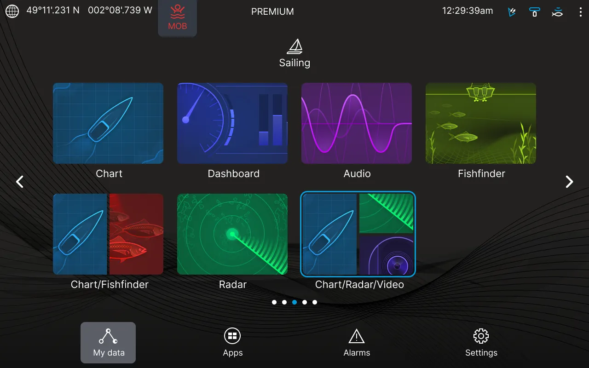
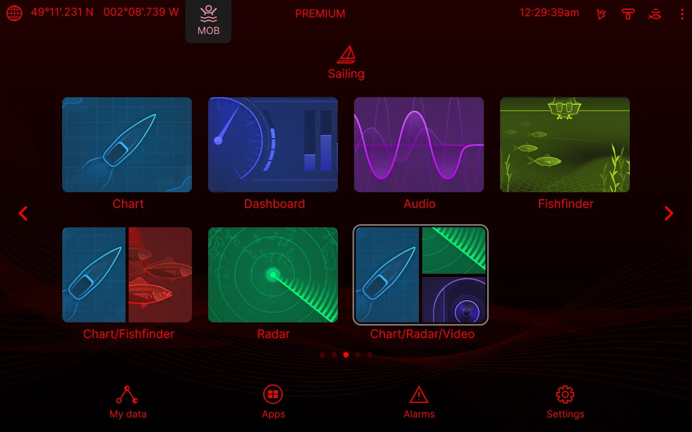
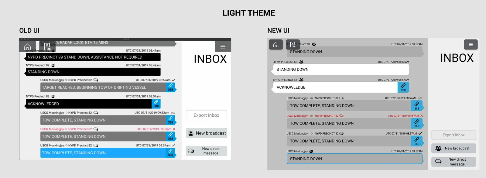
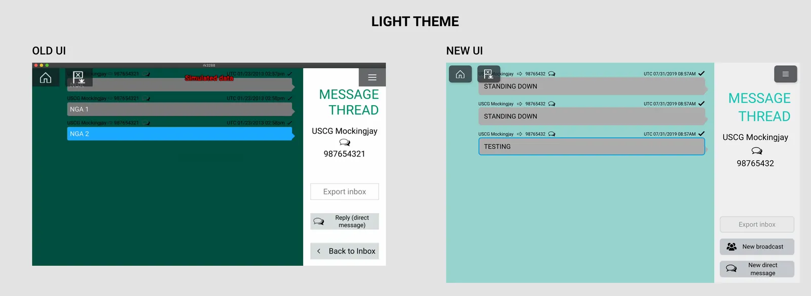

Lighthouse: a marine navigation interface, clearer without retraining operators
Radar, instrument gauges and onboard communication in one interface, redesigned while keeping the workflows ship operators already know.

At a glance
Problem
The existing interface needed to look more modern, clear and consistent without disrupting workflows that ship operators already depend on.
My role
I analyzed the existing UI, redesigned hierarchy, typography, spacing, controls and data presentation, prototyped, and iterated with customers.
Delivered
The redesigned navigation interface, UI screens, interactive prototypes and implementation-ready design files.
Context and constraints
Lighthouse is a maritime navigation platform that brings real-time radar, instrumentation gauges and onboard communication into a unified interface. It has to stay readable in different operating conditions, so it supports light, dark and night modes.
Three constraints shaped the work. The workflows and information architecture had to stay familiar to ship operators. The design had to be implemented by developers in an existing Qt and C/C++ environment. And the direction had to be approved by customers.
- Existing product analysis
- Problem definition
- UX/UI redesign
- Prototype
- Customer review
- Final output
Key decisions
Keep the flows, change the surface
I kept the established user flows and information architecture and redesigned how the interface looks and reads: hierarchy, typography, spacing, controls and data presentation.

One interface, three themes
The same layout works in light, dark and night modes, so visibility holds across operating conditions. The night theme uses a red-on-black palette.

Rework the message inbox for readability
The message inbox and thread were redesigned for clearer hierarchy and consistency. Old and new interfaces are shown side by side.


System and collaboration
I created reusable UI patterns for radar visualization, instrumentation gauges, navigation controls and onboard communication in Adobe XD, based on the approved concepts.
I worked closely with developers to refine designs for the existing technical environment, and directly with customers to gather feedback and improve the experience in iterations.
What shipped
- Redesigned navigation interface across light, dark and night modes.
- UI screens and reusable patterns for radar, gauges, navigation and messaging.
- Interactive prototypes that showed the existing workflow and interactions.
- Implementation-ready design files for the development team.